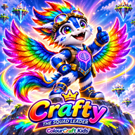

Crafty's Offline Academy
Keep learning even when the local server is unavailable.
Offline activities are read-only. Progress is not recorded in this mode.

Keep learning even when the local server is unavailable.
Offline activities are read-only. Progress is not recorded in this mode.